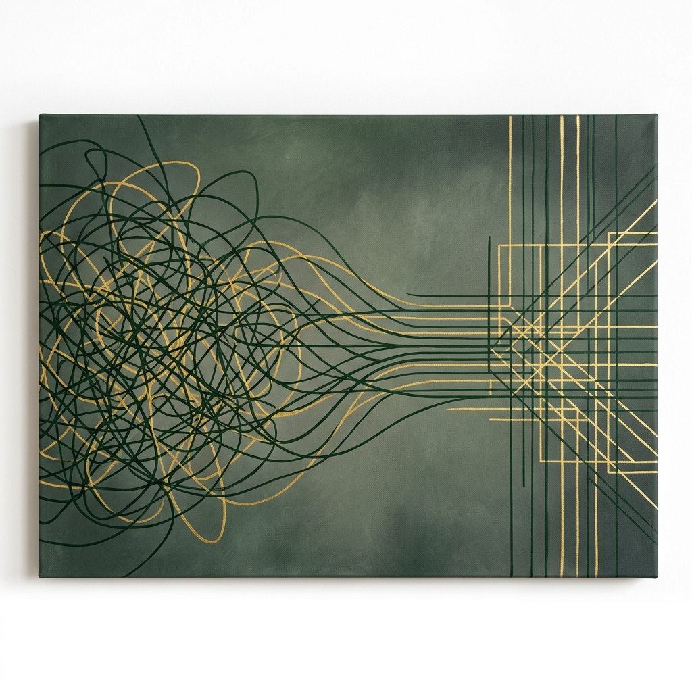
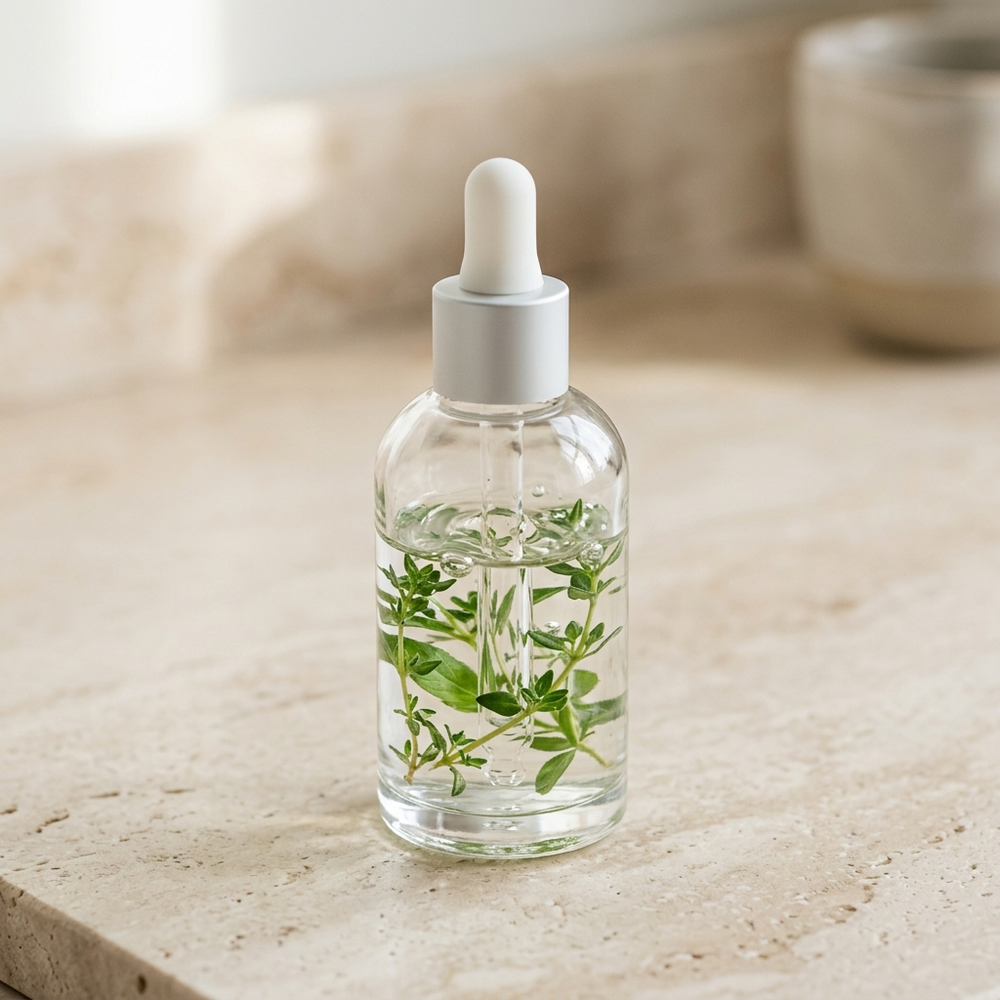

Quiet Focus
A Science-Backed, Neuro-Affirming Playbook to Overcome Task Paralysis and Manage Brain Fog (Without Burnout)
Introduction: The Shame-Free Paradigm Shift
What you will learn in this introduction
Why traditional productivity systems make you feel like a failure, how your brain chemistry differs from neurotypical standards, and the shift from willpower to friction-free flow.
If you have ended up here, you probably have a drawer, a folder, or a desktop screen filled with half-used journals, abandoned Notion templates, and colorful planners that were supposed to change your life. You bought them because you felt a sudden spike of motivation, used them with high energy for exactly four days, and then forgot they existed. And when you saw them again, you felt that familiar, heavy sensation in your chest: shame.
You have probably told yourself—or been told by others—that if you just had more "discipline," if you just made more "effort," or if you just "forced yourself" to start, you would be normal. We are here to dismantle that lie. Your struggle to start is not a character flaw. It is not laziness. It is a physical, biological reality of how your neurodivergent brain processes interest, reward, and executive function.
Traditional productivity was built by neurotypical people, for neurotypical people. It relies on a steady, predictable baseline of dopamine that allows them to perform boring tasks simply because "they have to." For an ADHD brain, that baseline does not exist. Trying to force yourself to fit into those rigid boxes is like trying to run a petrol car on diesel. It is not that the engine is broken; you are just using the wrong fuel.
The Science of the Neurodivergent Shift
This playbook does not ask you to change your brain. It asks you to change your environment. Instead of relying on sheer willpower—which is a finite resource that drains rapidly when you are in task paralysis—we will build systems that work with your brain's natural dopamine pathways. We call this shame-free productivity.
Throughout this guide, we will blend clinical neuro-science with highly practical, low-friction tools. We will cover the biology behind your focus, build an actionable "Dopamine Menu" to bypass starting resistance, and introduce a flexible, undated planning ecosystem that lets you drop off and restart whenever you need to, without a single ounce of guilt.
Key takeaways to remember
- Your executive dysfunction is a biological reality, not a lack of willpower or discipline.
- Rigid schedules fail you because they don't accommodate the dopamine fluctuations of the ADHD brain.
- This playbook is designed for shame-free, flexible use—drop off and pick it back up whenever you need to.
Section 1: The Science of Task Paralysis & Executive Dysfunction
What you will learn in this section
Why your brain registers boring tasks as physical threats, how under-arousal in the prefrontal cortex locks you in task paralysis, and the 5-minute deconstruction hack to break the freeze response.

You are sitting at your desk. You have an important email to send or a report to write. You know exactly what to do, you know the deadline is approaching, and you know the consequences of not doing it are stressful. Yet, you cannot move your hand to the keyboard. Instead, you stare at the screen, browse the same three tabs, or scroll through your phone, feeling a growing wave of anxiety and self-loathing. This is not procrastination. This is Task Paralysis, a neurobiological freeze response.
The Amygdala Hijack and Under-Arousal
In neurotypical productivity models, task initiation is treated as a simple decision. In the ADHD brain, a boring, vague, or complex task triggers a very different response in the Prefrontal Cortex (PFC). Because your PFC is chronically under-aroused due to lower dopamine receptor activity, it struggles to project the future positive feelings of completing the task. Instead, the brain only registers the immediate cognitive friction of starting.
When this friction is high, your amygdala—the brain's emotional threat-detector—registers the task as a source of stress and discomfort. It triggers a subtle "fight, flight, or freeze" survival response. Since you cannot fight the spreadsheet or run away from your desk, your brain chooses to freeze. You are physically locked out of action. The harder you try to "force" yourself to start, the more anxiety you trigger, reinforcing the amygdala's threat signal.
Time Blindness: The "Now" vs. "Not Now" Trap
Another major factor in executive dysfunction is time blindness. The ADHD brain does not view time as a linear river. Instead, it operates in two zones: Now and Not Now. If a task's deadline is in the "Not Now" category, the prefrontal cortex cannot generate the urgency required to initiate it. Only when the deadline crashes into the "Now" zone does the brain release a massive surge of adrenaline and cortisol to force action. While this emergency system works, it relies on chronic stress, leading directly to cognitive fatigue and eventual burnout.
🛠️ The 5-Minute Deconstruction Hack
To bypass the amygdala's threat response, you must reduce the task's starting friction to absolute zero. Follow this protocol:
- Step 1: Write it down: Get the vague task out of your head (e.g., "Clean the desk").
- Step 2: Deconstruct to a micro-action: Break it down until it feels laughably easy (e.g., "Pick up one empty coffee cup").
- Step 3: Set a 5-minute visual timer: Tell your brain you only have to work on this one micro-action for 5 minutes. If you want to stop after 5 minutes, you have full permission to do so.
- Step 4: Execute: Pick up the cup. Once the physical freeze is broken, the brain gets a small dopamine hit, making it 80% easier to continue.
Key takeaways to remember
- Task paralysis is a neurological freeze response triggered by amygdala stress, not laziness.
- Vague or boring tasks are registered as cognitive threats because the prefrontal cortex is under-aroused.
- The key to breaking the freeze is task deconstruction—aiming for micro-actions so small they bypass your threat detection.
Section 2: Building Your Dopamine Menu (The Dopamine Diner)
What you will learn in this section
How to design a personal menu of high-value dopamine stimulants, how to prevent "novelty burnout," and how to transition smoothly from resting states to deep focus work.
When your brain runs out of baseline dopamine, it becomes desperate. It will search for the fastest, most low-friction stimulation available. Usually, this means picking up your phone to scroll social media, opening an email tab, or shopping online. By the time you realize what happened, two hours have vanished, and your focus is completely shattered.
You cannot prevent your brain from seeking dopamine—that is its biology. But you can curate what it finds when it goes searching. This is the purpose of a Dopamine Menu (or "Dopamenu"). A Dopamine Menu is a pre-planned, highly visual list of healthy, energizing activities split into specific categories, ready to guide your brain when decision fatigue strikes.
Structuring Your Dopamine Diner
To make your menu functional, divide your dopamine triggers into the following categories:
Bypassing the "Novelty Burnout" Trap
On Reddit, a common complaint is: "I spent three hours making a beautiful dopamine menu, and a week later I got bored of it and never looked at it again." ADHD brains are highly sensitive to novelty. Once a list becomes static, it loses its dopamine-stimulating power.
To solve this, use The Rotating Deck Method. Instead of writing a fixed list on paper, write your appetizers, desserts, and sides on separate index cards (or dynamic Notion blocks). Keep them in a physical box on your desk. When you need a break, draw a card at random. This introduces an element of surprise and gamification, keeping the novelty alive and removing the decision fatigue of picking an activity.
🛠️ How to Implement Your Dopamenu Today
- Step 1: Write down 3 items for each category (Appetizer, Dessert, Side) that genuinely recharge you.
- Step 2: Make it highly visual: Set it as your phone background, stick it on your monitor, or put your index cards in a visible box on your desk. If it is hidden, it does not exist.
- Step 3: Schedule your Desserts: Never use a Dessert (like gaming or scrolling) as a quick break during a work block unless you have a hard visual timer set. Desserts should be rewards *after* work, not distractions *during* work.
Key takeaways to remember
- A Dopamine Menu pre-selects healthy dopamine sources to prevent impulsive doom-scrolling.
- Categorize your menu: quick Appetizers, deep Entrees, rewarding Desserts, and passive Sides.
- Avoid novelty burnout by randomizing your choices (drawing index cards or using a digital wheel).
Section 3: Low-Stress, Undated Productivity Systems
What you will learn in this section
Why dated planners build guilt, how to plan around context and energy levels rather than hours, and the "open-flat" rule of neurodivergent workspace design.
Standard productivity tools assume a continuous, linear stream of daily motivation. They print dates on pages—*Monday, Tuesday, Wednesday*—assuming you will fill every day with structured, hourly blocks. For an ADHD brain, this layout is a trap. If you experience an emotional crash, a bad sleep night, or a hyperfocus derailment, you will skip days. When you reopen the planner, you are met with blank pages. These blank pages serve as a visual record of your perceived failure, triggering shame and causing you to shut the book for good.
The Power of the Undated (Shame-Free) Layout
To break this cycle, the first rule of ADHD planning is: **it must be undated**. You only write the date when you actually use the page. If you skip a day, a week, or even a month, you simply turn to the next page and continue where you left off. There are no blank gaps, no wasted paper, and **no visual evidence of failure**. The system is infinitely forgiving.
Context and Energy-Based Lists
ADHD brains experience massive energy swings throughout the day. Scheduling a cognitively demanding task (like "Write sales copy") for 3:00 PM is a recipe for task paralysis if your brain is in a "low battery" state.
Instead of scheduling tasks by *time*, categorize them by **Energy Level** and **Context**:
- High-Energy (Entrees): Writing, designing, debugging, strategic planning. Requiring deep executive function.
- Low-Energy (Brain-Dead Tasks): Repetitive administration, organizing files, updating spreadsheets, sorting bookmarks. Tasks that require low focus.
- Context-Based: Grouping tasks by environment (e.g., "While at computer," "Phone calls," "Errands outside"). This reduces the high cognitive cost of **context switching** (moving between totally different types of activities).
🛠️ The Daily Workspace Set Up Protocol
- Rule 1: The "Open-Flat" Rule: If a planner is closed, it ceases to exist. Use a spiral-bound physical notebook or a second monitor showing your Notion dashboard that *never* goes to sleep. Keep it physically open and in your line of sight at all times.
- Rule 2: The Morning Brain Dump: Before trying to organize, write down everything cluttering your head on a messy scrap paper (the "Inbox"). Do not try to make it neat. Just offload the working memory.
- Rule 3: Select Only Three High-Energy Tasks: Under-schedule. Pick at most 3 high-energy tasks for the day. Any extra completed task is a victory, not a requirement.
Key takeaways to remember
- Undated planners prevent the guilt cycle of blank, wasted pages.
- Organize your tasks by context and required energy levels, not strict hourly schedules.
- Keep your planning tools open and visible at all times to bypass object permanence struggles.
Section 4: Managing Brain Fog & Cognitive Fatigue
What you will learn in this section
The biology behind ADHD brain fog, how sensory overload drains your daily battery, and the 3-step cognitive decompression ritual to restore clarity.
Some mornings you wake up and feel like your brain is wrapped in a thick, wet wool blanket. You stare at simple sentences and have to read them three times to understand them. You walk into a room and completely forget why you are there. This is Brain Fog, a state of cognitive fatigue where your brain's processing speed slows down to a crawl.
The Science of ADHD Energy Fluctuations
Unlike neurotypical brains that maintain a relatively stable level of cognitive energy throughout the day, the ADHD brain operates on an "all-or-nothing" battery. When you are in hyperfocus, you burn through cognitive resources at an unsustainable rate. When that hyperfocus window closes, your brain is depleted of neurotransmitters, plunging you into acute under-arousal and brain fog.
Furthermore, ADHD brains struggle with sensory filtering. A neurotypical brain can automatically ignore the sound of the air conditioner, the flickering light bulb, or the chatty colleague in the background. Your brain processes *all* of these stimuli at the same volume. This constant, background processing drains your cognitive energy battery long before you even start working on your actual tasks.
Bypassing Sensory Overload and Cognitive Crashes
To manage brain fog, you must stop trying to "push through" it. Pushing through a brain fog state only increases your cortisol (stress hormone) levels, which further impairs your prefrontal cortex. Instead, you must reduce sensory inputs and allow your neurotransmitter levels to recover.
🛠️ The Cognitive Decompression Protocol
When you feel brain fog settling in, do not force yourself to focus. Stop and execute this 3-step decompression ritual:
- Step 1: Visual and Auditory Blackout: Put on noise-cancelling headphones (with brown noise or silence) and close your eyes for 10 minutes. Remove all incoming sensory inputs.
- Step 2: Low-Friction Hydration & Movement: Drink a large glass of cold water and step outside for 5 minutes. The exposure to natural sunlight triggers cortisol regulation and stimulates alert systems.
- Step 3: Shift to low-energy tasks: Open your "Brain-Dead Tasks" list from Section 3. Do not attempt high-focus work. Clear out administrative backlogs, organize files, or clean your desk.
Key takeaways to remember
- Brain fog is the physical result of neuro-chemical depletion and sensory overload, not a lack of effort.
- Trying to force focus during brain fog increases stress, which worsens cognitive lock.
- Use the Decompression Protocol to regulate sensory inputs and shift to low-energy administrative tasks when battery is low.
Section 5: The Science-Backed Supplement Stack (Clinical Focus)
What you will learn in this section
The neurotransmitter mechanics of ADHD focus, a clinically backed, no-filler supplement stack, and how to safely optimize your cognitive baseline.

Behavioral systems like planners and Notion templates are essential structures, but they only work if your biology supports them. If your brain is physically depleted of the raw materials required to produce dopamine and norepinephrine, even the best planner in the world will not help you start.
This section explores the science-backed compounds that help support focus, memory, and cognitive resilience. We do not believe in "miracle cures" or marketing scams. We look strictly at clinical trials, molecular pathways, and neurochemistry to help you build a safe, sustainable cognitive supplement stack.
The Core Neurotransmitters of Focus
To lock in attention, your brain relies on two key chemical messengers:
- Dopamine: The molecule of anticipation and motivation. It signals to your brain that a task is worth initiating and rewards you for doing it.
- Acetylcholine: The molecule of focus and attention. It acts like a spotlight, highlighting specific details and helping you filter out background distractions.
The Clinically Backed ADHD Focus Stack
Here is a breakdown of the most researched natural compounds that support these cognitive pathways, along with recommended clinical dosages and how they work.
1. L-Theanine + Caffeine (The Focused Calm)
Caffeine is the most common cognitive stimulant, but for ADHD brains, it often leads to jitters, racing thoughts, and a harsh energy crash. When paired with L-Theanine (an amino acid found in green tea), a synergistic effect occurs. L-Theanine crosses the blood-brain barrier and increases alpha brain waves, promoting relaxation without drowsiness. Paired together, they deliver sharp, calm focus without the jittery side effects or crashes.
Clinical Dosage: 100mg Caffeine paired with 200mg L-Theanine (a 1:2 ratio).
2. L-Tyrosine (The Dopamine Precursor)
L-Tyrosine is a natural amino acid that acts as a direct building block for dopamine and norepinephrine. During periods of high stress, cognitive work, or sleep deprivation, your brain depletes its tyrosine stores, leading directly to executive function shutdown. Supplementing L-Tyrosine gives your brain the raw materials it needs to keep dopamine production stable.
Clinical Dosage: 500mg to 1500mg taken in the morning on an empty stomach.
3. Magnesium L-Threonate (The Brain-Permeable Magnesium)
Most forms of magnesium (like oxide or citrate) struggle to cross the blood-brain barrier. Magnesium L-Threonate was developed specifically to solve this. It raises brain magnesium levels, supporting synaptic density, memory recall, and mitigating the "stimulant crash" or evening rebound anxiety common in ADHD adults.
Clinical Dosage: 1000mg to 2000mg taken in the evening to support restorative sleep.
4. Omega-3 Fatty Acids (EPA & DHA)
High-dose Omega-3s (specifically EPA) support cellular membrane health in the brain, helping dopamine receptors function more efficiently. Clinical trials show consistent, moderate improvement in attention and working memory in adults with ADHD over a 12-week period.
Clinical Dosage: Minimum 1000mg of pure EPA daily.
💡 Recommended Nootropic Solutions & Stacks
If you prefer ready-made, high-quality formulations rather than buying individual ingredients, here are the most trusted clinical brands:
- T9 - Qualia Mind — The gold standard for comprehensive cognitive support. It includes L-Tyrosine, Bacopa Monnieri, and direct acetylcholine precursors. Excellent for deep work days. Explore Qualia Mind here.
- T9 - Onnit Alpha Brain — A caffeine-free nootropic blend focusing on alpha brain waves and acetylcholine support. Great for smooth, steady focus without stimulants. Explore Onnit Alpha Brain here.
- T9 - High-EPA Omega-3 (Nordic Naturals) — The most reliable brand for high-potency, pure fish oil to build your cognitive baseline. Find Nordic Naturals on Amazon.
⚠️ Medical Disclaimer & Action Plan
Disclaimer: This information is for educational purposes and is not medical advice. Always consult your healthcare provider before starting any new supplement regimen, especially if you take prescription medications.
- Start by adding just one supplement at a time (e.g., L-Theanine + Caffeine) to isolate how your brain chemistry reacts.
- Log your focus and energy levels daily in your Notion Focus Tracker to measure real results.
- Prioritize baseline biology: supplements cannot replace the cognitive benefits of quality sleep, hydration, and movement.
Section 6: ADHD Coping Systems for Remote Work & Freelancing
What you will learn in this section
How to build external structures when working from home, how to manage client boundaries without triggering anxiety, and ready-to-use communication templates.
Working from home or freelancing is both a blessing and a curse for the ADHD brain. On one hand, you have the freedom to follow your hyperfocus waves and work in comfortable environments. On the other hand, the complete lack of external structure, visual accountability, and immediate feedback loops can lead directly to chronic task paralysis and burnout.
The Trap of "Invisible Deadlines"
In a traditional office, the physical presence of colleagues and managers creates a passive form of accountability. At home, deadlines are invisible. They only exist inside your head or as digital calendar notifications that are easily dismissed. To succeed, you must build **external, high-visibility feedback loops** that replace the missing office structure.
Another challenge is client communication. When you feel task paralysis setting in on a project, your anxiety spikes. Instead of communicating, you might freeze, ignore emails, or disappear. This silent retreat destroys client trust. Clients do not need you to be perfect; they need you to be **predictable**.
Managing Client Expectations Anxiety-Free
The secret to managing client anxiety is **proactive boundary setting** and standardized communication scripts. By using ready-made email templates, you bypass the emotional friction and decision fatigue of trying to write a message when you are already feeling overwhelmed.
🛠️ Communication Scripts & Email Templates
Copy, paste, and adapt these templates to handle common remote work bottlenecks without triggering stress:
Template A: Negotiating a Deadline Extension (Proactive)
Subject: Update on [Project Name] schedule
Hi [Client Name],
I am currently finalizing the core sections of [Project Name] and want to ensure the final deliverable meets our quality standards.
To give it the polished finish it deserves, I am adjusting our delivery date by 24 hours. You can expect the final files in your inbox on [New Date] at [Time].
Thank you for your understanding!
Best,
[Your Name]
Template B: Clarifying Vague Specifications (Reducing Starting Friction)
Subject: Quick question regarding [Project Name] specs
Hi [Client Name],
I am preparing to kick off the design phase for [Project Name]. To make sure my work is perfectly aligned with your expectations, could you clarify one detail?
For the [Specific Section], do you prefer Option A (brief description) or Option B (detailed guide)?
Once you confirm, I will begin execution immediately.
Best,
[Your Name]
Key takeaways to remember
- Remote work fails without externalized, highly visual feedback loops and structural accountability.
- Client trust is built on predictability, not perfection—proactive communication is the key to reducing anxiety.
- Use pre-written communication templates to bypass the emotional freeze of writing emails under pressure.
Section 7: Walkthrough: How to Use the Quiet Focus Daily Planner
What you will learn in this section
How to use your undated digital PDF daily planner on tablet (Goodnotes/Notability), understanding the layout blocks, and the 3-minute morning set up routine.
Your daily planner is not a cage to lock you into rigid hourly slots. It is an external working memory board designed specifically to reduce cognitive load and organize your day based on your focus levels. This section walks you through how to use the interactive, undated **Quiet Focus Daily PDF Planner** on your tablet (iPad, reMarkable, or Android tablet using apps like Goodnotes, Notability, or Penly).
1. The Focus Score and Daily Vibe (Morning Warmup)
Before writing down a single task, look at the top-left corner of the page. You will see a small battery icon and a focus tracker. Take 10 seconds to evaluate your energy levels. Are you starting the day with 20% battery or 80% battery? Circle your energy level.
This small step sets your expectations. If your battery is at 30%, you should not attempt to write three heavy Entrees (Section 3). You adjust your list accordingly, selecting low-energy tasks or scheduling a slower day. This is visual confirmation that you are planning around your actual chemistry, not an idealized version of yourself.
2. The Task Deconstruction Grid (The Rule of 3)
In the middle of the planner, you will find the task grid. Instead of a long, overwhelming list of 20 items, the grid forces you to prioritize:
- The Big 3 (Entrees): The three most important high-energy tasks for the day. If you only finish these three, your day is a massive success.
- The Quick Wins (Appetizers): Tiny tasks that take less than 5 minutes (e.g., reply to a client email, pay a bill). Great for building initial momentum.
- Brain-Dead List: Low-energy tasks you can do when your focus dips in the afternoon.
3. The Daily Dopamine Slot & Side Trackers
On the right side of the layout, you will see a dedicated **Dopamine Slot**. This is where you write down your chosen reward for the day (drawn from your Dopamine Menu in Section 2). By having your reward physically visible next to your tasks, you give your brain a visual milestone to work toward.
🛠️ Goodnotes & Tablet Setup Tips
Optimize your digital planning experience to bypass distraction:
- Keep it in full screen: Open the planner in Goodnotes and lock the screen. Close all other tabs on your tablet.
- Use Hyperlinks: Tap on the tab icons at the edge of the PDF to jump instantly between Daily Pages, Weekly Reviews, and your Dopamine Menu. No manual scrolling required.
- The "Wipe Clean" Rule: Since it is a digital PDF, if you have a chaotic day where nothing goes to plan, do not feel bad. Use the lasso tool to clear the page, write a smiley face, and start fresh tomorrow.
Key takeaways to remember
- Circle your daily energy level *before* writing tasks to adjust expectations and reduce starting pressure.
- Limit high-energy expectations to "The Big 3" to prevent cognitive overwhelm.
- Keep the planner in full screen on your tablet next to your monitor, open-flat at all times.
Section 8: Walkthrough: Setting Up Your Notion Dashboard
What you will learn in this section
How to configure your dynamic Notion dashboard, using the "Inbox" database for friction-free capture, and managing your digital Dopamine Menu.
While the PDF planner is excellent for daily handwriting and tactile focus, the **Notion Dashboard** serves as your permanent digital database. It stores your templates, logs your supplement stack, and acts as your external second brain. This section shows you how to navigate and configure the dashboard without getting lost in customization features.
1. The Inbox (Bypassing Object Permanence Issues)
ADHD brains struggle with **object permanence** (out of sight, out of mind). If you do not write down an idea or task the second it pops into your head, it vanishes. The centerpiece of your Notion Dashboard is the **Inbox Button**.
The Inbox is a single, clean database with one button: "New Task." When an idea strikes, you tap the button, type it out, and close the app. Do not try to categorize it, assign dates, or select projects. This ensures the capture process takes less than 3 seconds, minimizing the cognitive friction of recording information. Every Monday, you open the Inbox and sort these captured items into your Weekly Plan.
2. Energy-Tagging Your Projects
Within the Notion database, every task is assigned a property called **Energy Level** (High, Low, Brain-Dead) rather than a fixed time. When you start your work block, you do not look at a calendar. You look at your current focus level, filter the Notion database by that energy tag, and select a task that matches your brain chemistry at that exact moment.
🛠️ Notion Configuration & Onboarding
Follow this 3-step setup to customize your digital dashboard:
- Step 1: Install the template: Click your unique duplicate link in the Wellenzo bundle. Save it to your private Notion workspace.
- Step 2: Add to phone home screen: Install the Notion widget on your mobile phone, linking directly to the "Inbox Button." This allows 1-tap capture on the go.
- Step 3: Keep it clean: Hide all databases from your main page view. Your dashboard should only show three things: The Inbox, The Daily Big 3, and your Dopamine Menu card drawing box.
Key takeaways to remember
- Use the mobile Notion widget to capture ideas instantly into your Inbox database in under 3 seconds.
- Tag tasks by required energy levels to easily filter for what you can execute right now.
- Minimize workspace clutter—hide complex databases to avoid visual overstimulation and focus distraction.
Section 9: Navigating Diagnosis & Support Pathways
What you will learn in this section
How to navigate the diagnostic process, practical ways to prepare for a clinical assessment, and key avenues for finding local and digital support.
Getting diagnosed with ADHD as an adult is a long, expensive, and emotionally exhausting process. Waitlists in public healthcare systems can range from months to years, while navigating private healthcare fees or insurance options can feel overwhelming when you are already dealing with executive dysfunction. This section provides a practical roadmap to help you prepare for a clinical evaluation and access support pathways.
1. The Diagnostic Standards & Finding Specialists
To get a formal assessment, you need to consult a licensed clinical professional who specializes in adult neurodevelopmental conditions. This typically includes **psychiatrists**, **clinical psychologists**, or specialized **neurologists**. Depending on where you live, diagnostic criteria will follow either the **DSM-5** (Diagnostic and Statistical Manual of Mental Disorders) or the **ICD-11** (International Classification of Diseases). Both frameworks require evidence of symptoms present in childhood that affect multiple areas of your life (such as work, education, and relationships).
2. Preparing for Your Assessment (Reducing Interview Stress)
Clinicians rely heavily on self-reported histories and structured interviews (such as the DIVA-5). Because of memory and object permanence issues, it is easy to forget your lifelong symptoms during a high-stress interview. Prepare an **Assessment Prep Folder** with:
- A Symptom Journal: Track daily instances of task paralysis, focus drops, and impulsivity over a 2-week period.
- Childhood Evidence: Compile school report cards, teacher comments mentioning "not living up to potential" or "easily distracted", and stories from parents or childhood friends.
- Self-Screening Tools: Complete a standard self-screener (such as the WHO ASRS v1.1) to bring as a baseline indicator.
📋 Essential ADHD Support & Resource Portals
Use these pathways to access professional support and diagnostic help:
- National ADHD Associations: Look for national ADHD organizations or neurodiversity associations in your country, which frequently provide directories of verified local specialists.
- Peer-Support Groups: Seek local or online peer-support groups. Community members are often the best resource for finding neurodiversity-affirming clinicians in your area.
- Telehealth Platforms: Research regulated online telehealth providers operating in your region, as they can sometimes offer faster diagnostic assessments and titration services compared to local clinics.
Key takeaways to remember
- Seek specialized professionals (psychiatrists or clinical psychologists) who explicitly specialize in adult assessments.
- Prepare a folder of childhood evidence and symptom tracking to bypass memory lapses during your diagnostic interview.
- Utilize national networks and local peer-support communities to find recommended clinicians and regional resources.
Section 10: The ADHD Shutdown Recovery Plan
What you will learn in this section
How to identify the warning signs of cognitive shutdown, the 5-step crisis recovery protocol to restart your brain, and how to return to work without shame.
There will be days when your systems completely fall apart. You will experience a week of high-focus work, burn through your mental fuel, and suddenly find yourself unable to write a single word or reply to a simple text. Your brain feels empty, your body feels heavy, and even the smallest decision triggers intense anxiety. This is **ADHD Shutdown** (or executive burnout). It is a protective freeze response from a nervous system that has been overstimulated and depleted.
1. The Warning Signs of Shutdown
Executive shutdown does not happen out of nowhere. It is preceded by subtle warning signs that you must learn to recognize:
- Sensory Irritability: Small sounds (clicking keyboards, distant hums) or bright lights feel physically painful or highly annoying.
- Decision Freeze: Staring at simple choices (e.g., what to eat for lunch, which email to open first) and feeling completely paralyzed.
- Hyper-Scrolling: Impulsively scrolling social media for hours without registering any of the content—a desperate search for dopamine in a dry brain.
When you reach this state, **your brain is offline**. Attempting to use willpower to force yourself back to work will only prolong the shutdown, converting a 1-day energy crash into a 2-week depressive burnout.
2. The 5-Step Crisis Recovery Protocol
When you recognize that your prefrontal cortex has shut down, immediately activate this emergency protocol:
🚨 The 5-Step Emergency Protocol
- Step 1: Declare a "Zero-Productivity State": Close your laptop, put your phone in another room, and tell yourself: *"My brain is offline for the next 2 hours. I have full permission to do absolutely nothing."* Stop the shame cycle immediately.
- Step 2: Reduce Sensory Load: Lie down in a dark, quiet room. Put on noise-cancelling headphones or play slow, ambient brown noise. Let your nervous system settle.
- Step 3: Biology Baseline Check: Drink a large glass of water and eat a simple, high-protein snack (nuts, protein bar, eggs). Your brain cannot produce neurotransmitters without amino acids and hydration.
- Step 4: Low-Dopamine Stimulation: Engage in a passive, low-stress activity that does not require decisions (e.g., reading a physical book, coloring, taking a hot shower). Avoid high-dopamine screens (gaming, social media, work).
- Step 5: The "One-Item" Reset: Once your energy begins to return (usually after a few hours or a good night's sleep), restart your system by picking up exactly **one** small, easy action. Write it down, execute it, and stop. This resets your dopamine loop without triggering another crash.
Key takeaways to remember
- ADHD shutdown is a physical warning signal that your brain is depleted of neurotransmitters and energy.
- Forcing focus during shutdown will only prolong the crash—disconnect immediately to allow recovery.
- Follow the 5-Step Crisis Protocol to regulation sensory inputs, rest your nervous system, and reset your baseline biology.
Conclusion: Building a Sustainable Future
Your roadmap forward
How to transition from learning to daily action, utilizing your planners and templates, and maintaining a shame-free productivity mindset.
You have completed the playbook. You now understand the neuroscience of your focus, how to build a flexible Dopamine Menu, and how to plan around your energy levels rather than rigid, guilt-inducing calendar hours.
But remember: **knowledge without execution is just information**. You do not need to implement every system in this guide today. Start small. Build your profile, open your planner, set your mobile Notion inbox widget, and take one step at a time.
Wellenzo was built to help you navigate your unique brain chemistry. When you stumble—and you will—remember the core rule: **there are no blank pages**. Simply turn the page, write the date, and start again. Shame-free, dopamine-friendly, and on your own terms.
Next immediate actions
- Action 1: Duplicate your Notion Focus Dashboard and install the phone widget for instant capture.
- Action 2: Import your undated daily PDF planner into Goodnotes or print the first 5 pages.
- Action 3: Write down your first 3 Appetizers and 3 Desserts to build your starting Dopamine Menu.
Annex A: Neuro-Affirming Focus Glossary
Reference glossary
A quick-reference guide to the neurological and psychological concepts used throughout this playbook.
- Executive Dysfunction: A disruption in the brain's ability to plan, focus, remember instructions, and juggle multiple tasks successfully due to altered neurotransmitter regulation in the prefrontal cortex.
- Task Paralysis (ADHD Freeze): A biological lock state where a task triggers a threat response in the amygdala, freezing the nervous system and making it physically difficult to initiate action.
- Amygdala Hijack: An immediate, overwhelming emotional response to cognitive stress that bypasses logical processing in the prefrontal cortex, entering a survival (fight/flight/freeze) mode.
- Time Blindness: The biological difficulty in perceiving, measuring, or tracking the passage of time, causing tasks to be categorized as either "Now" or "Not Now."
- Dopamine Menu (Dopamenu): A structured list of activities categorized by required energy and time, designed to guide the brain toward healthy dopamine sources when focus levels drop.
- Novelty Burnout: The rapid loss of interest in a system, tool, or hobby once the initial dopamine novelty wears off, common in neurodivergent minds.
- Sensory Filtering: The process by which the brain ignores irrelevant environmental stimuli (sounds, lights, movement). ADHD brains struggle with this, processing all stimuli equally, which leads to sensory fatigue.
- Nootropics: Natural or synthetic compounds that support cognitive function, memory, creativity, and motivation.
Annex B: Quiet Focus Worksheets & Trackers
Printable resources
Print these sheets or duplicate them into your notebook to track your daily progress and baseline biology.
1. The Daily Dopamine Diner Planner
Use this blank layout to draft your focus strategy in the morning:
2. The Weekly Focus & Supplement Log
Track your supplement stack and note how your focus scores respond over the week:
| Day | L-Tyrosine | Caffeine+Theanine | Magnesium | Focus Score (1-10) |
|---|---|---|---|---|
| Monday | [ ] | [ ] | [ ] | _________________ |
| Tuesday | [ ] | [ ] | [ ] | _________________ |
| Wednesday | [ ] | [ ] | [ ] | _________________ |
| Thursday | [ ] | [ ] | [ ] | _________________ |
| Friday | [ ] | [ ] | [ ] | _________________ |
| Saturday | [ ] | [ ] | [ ] | _________________ |
| Sunday | [ ] | [ ] | [ ] | _________________ |